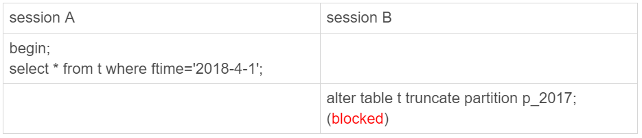

mysql的分区表
分区表是什么？他有什么好处？有什么坏处？为什么不建议生产环境上使用分区表？
测试的脚本如下
1 | CREATE TABLE `t` ( |
可以看到表空间下，有一个frm文件和4个ibd文件说明
- server层这是一个表
- innodb的引擎层这是4个表
分区表引擎层行为
对于innodb来说
因为mysql的间隙锁和行锁是在引擎层做的，所以同一张表，分区表和普通的表的加锁规则可能会有所不同。还是用咱们例子对于分区表加锁的流程如下
而如果一个普通表他的加锁规则如下
原因是2018-02-1这条数据是在另一个分区，所以SessionA的间隙锁范围没设计到，儿2017-12-1这条数据和SessionA在同一分区所以被block住
对于myisam来说
由于myisam是表锁，但是这个由于引擎上分区表被分成了四张表所以，会造成下面的情况，破坏了引擎原生锁的规则
其他的坑
对于mysisam表采用的是通用分区策略，第一次访问分区表，会把表分区都走一遍，所以如果一个分区很大比如超过1024个，而我们的句柄数只有1024，这时候很可能会报错
对于innodb没有这个问题，因为采用的是本地分区策略，在后续版本Myisam已经不支持分区表了（5.7 deprecated,8.0正式弃用）
分区表对于Server层来说
因为server层对于分区表看成是一张表，所以在MDL的时候不同分区的DDL会被block主。如图：

分区表应用场景
对于业务来说只看到一张表，所以很简洁，并且可以随时添加新的分区，以及按照历史分区清理表数据
总结
由于分区表的特性会破坏引擎层的锁的定义，所以不建议在生产环境使用，建议采用手工分区的方式